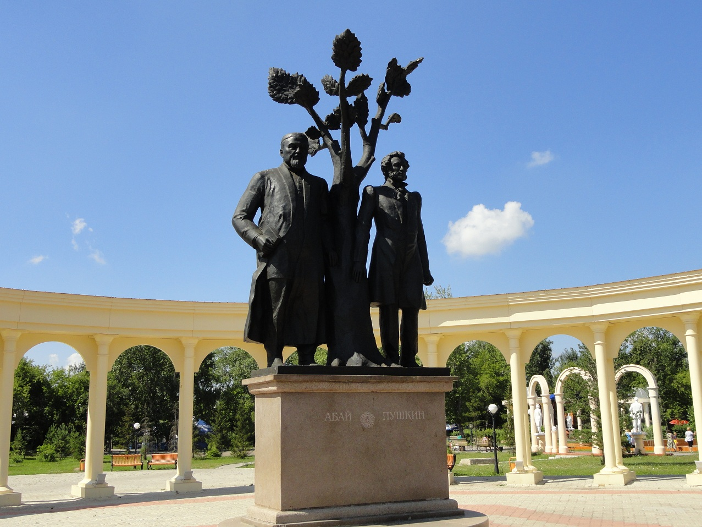
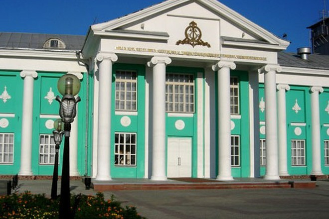
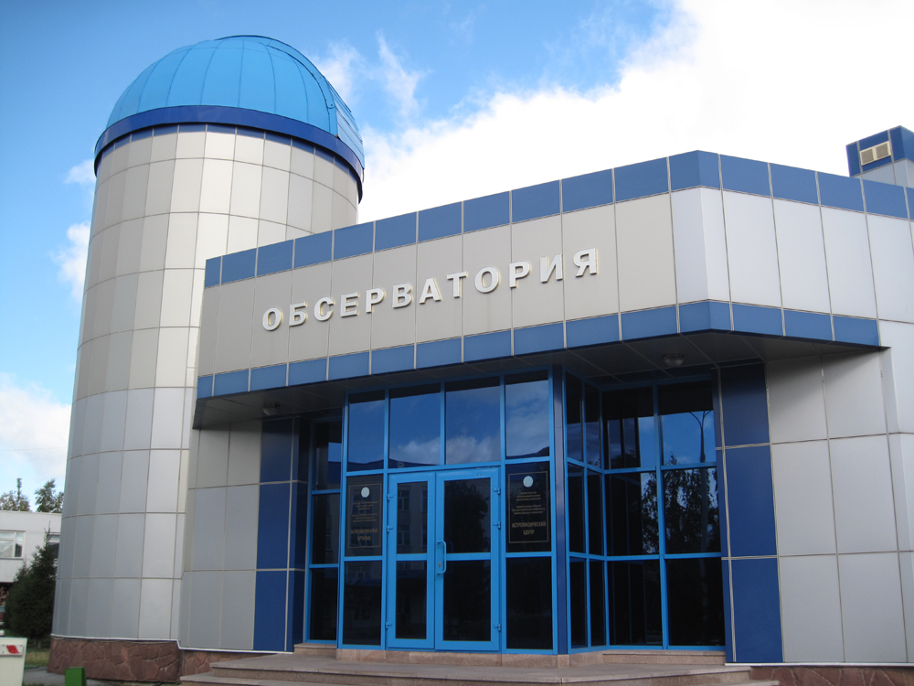
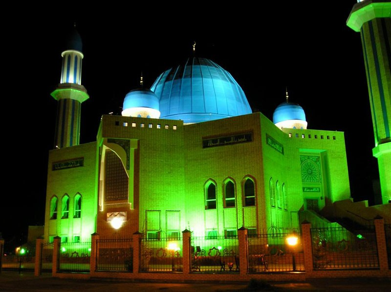
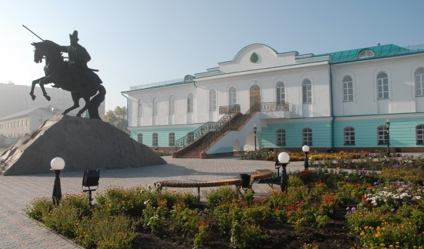
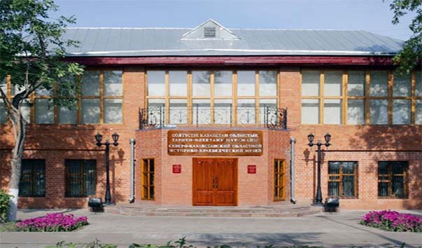
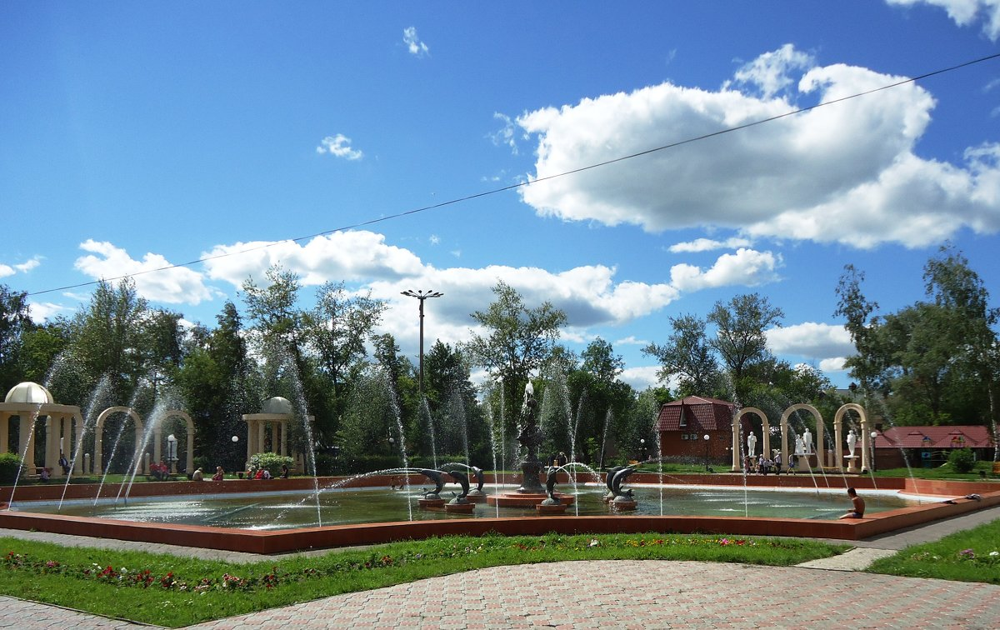

Скульптурная композиция «Абай – Пушкин»
 Композиция состоит из двух скульптур Абая и Пушкина и объединена символическим древом жизни, которое как бы разъединяет эпоху творений этих личностей, и в то же время сплачивает их, как символ вечности. Высота гранитного памятника – 7 метров 40 сантиметров, монумент окружает стройная колоннада. Открытый в день независимости республики скульптурный ансамбль стал достойным подарком городу и стране. Автором композиции стал известный казахстанский скульптор Казбек Сатыбалдин и архитекторы Валерий Затай и Султан Баймаганбетов.
Казахский Музыкально-Драматический Театр имени С. Муканова
 Театр был открыт в 2000 году при непосредственной поддержке Президента Нурсултана Абишевича Назарбаева. Молодому театру, открытие которого совпало со 100-летием великого писателя Сабита Муканова, было присвоено его имя. Северо-Казахстанский областной музыкально-драматический театр имени С. Муканова впервые открыл свой занавес спектаклем по пьесе С. Муканова «Аккан жулдыз».
Астрофизическая обсерватория в г. Петропавловске
 Достопримечательностью Петропавловска является и обсерватория СКГУ им. М. Козыбаева. В оснащение главной астрофизической обсерватории входит телескоп системы Ричи-Кретьена с диаметром зеркала 0,77 метра. Купол планетария, придающий неповторимый облик всему комплексу учебных корпусов Северо-Казахстанского государственного университета им. М. Козыбаева, оборудован проекционной аппаратурой фирмы «Leariving Technologies» США. Это второй по величине телескоп в республике, позволяющий решить современные научные задачи. В состав центра входит планетарий, расположенный в одном здании с обсерваторией.
Мусульманская мечеть «Кызыл Жар»
 Новая мечеть символично появилась на карте города в 2005 г. на бывшей улице Новомечетной, ныне улице Мира. Площадь сооружения составляет 1499 кв. метров. Центральная часть увенчана куполом 28-ми метровой высоты. Мечеть обрамляют два изящных минарета.
Музейный комплекс «Резиденция Абылай хана»
 Абылай (Абилмансур), хан Казахской орды, - один из выдающихся государственных деятелей в истории казахской государственности. В 1771 г. в городе Туркестане ханы, султаны, батыры трех жузов объединились и провозгласили Абылая ханом Казахского ханства. По просьбе хана Абылая и с разрешения царского правительства для его пребывания в окрестностях крепости Св. Петра, вверх по реке Ишим, в горах Янгистау, в 1765 году был построен деревянный дом. Позже, по легенде, дом сгорел во время одного из пожаров, часто случавшихся в городе, а на его месте был построен каменный (достовернее всего - здание мельницы Полякова). Как гласит народное предание, после утверждения царским правительством в 1821 году сына Абылая Уали ханом Среднего жуза на верхнем форштадте для него был построен двухэтажный каменный дом. С тех пор в городе Петропавловске находилась зимняя резиденция хана Среднего жуза. Резиденция Абылая, как утверждают краеведы, была первой и долгое время единственной постройкой на горе.
Областной историко-краеведческий музей
Музей принял первых посетителей в начале 1924 года. Тогда он находился в небольшом домике по улице Караванной, а в 1968 году разместился на улице, которая сегодня носит название Конституции Казахстана.Группой художников Карагандинского и Целиноградского художественных фондов под руководством A.Чудова были осуществлены перепланировка и реконструкция двухэтажного особняка, принадлежавшего в свое время купцу Туби Лейбовичу Аркелю. Сегодня комплекс является одним из лучших музеев Казахстана. В его фондах хранится более 134 тыс. экспонатов. Здесь можно познакомиться с природой Северо-Казахстанской области, находками археологов, элементами быта переселенцев, осмотреть залы, относящиеся к разным историческим эпохам.
Фонтан Дружбы
Фонтан Дружбы в городском парке Петропавловска был открыт в июле 2010 года, когда был завершен очередной этап реконструкции и благоустройства парка. Фонтан раскинулся посреди парка, неподалеку от скульптурных композиций, изображающих известных литераторов России и Казахстана, которые установлены в это же время. Он украшен металлическими дельфинами. Также поблизости располагаются аттракционы, летние кафе, клумбы и лавочки, среди которых так приятно прогуляться как местному жителю, так и гостю Петропавловска.